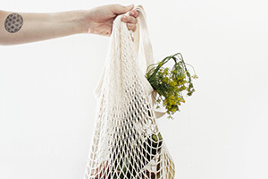
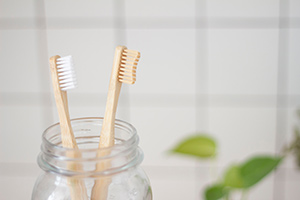

Life hacks
Man kan aldrig få för mycket tips därför tänkte vi dela med oss av våra bästa vardagstips

Ersätta Plasten
Inte bara haven är fyllda av plast utan det finns även överallt i människors närmiljö.
Det tar flera hundra år för naturen att bryta ner plasten så det är fördelaktigt att försöka
hitta
andra alternativ för privat bruk av plast.
Idag finns ganska många alternativ till plast om man letar lite.
Tur att det nu finns både fryspåsar, påsklämmor, tandkräm och flosspicks som är
plastfria.

Städa
Det är dyrt och trist att behöva släpa hem massa giftiga städprodukter men i många fall kan man
faktiskt klara sig utan.
För att rengöra kakel och vask går det jättebra att använda bikarbonat.
För att skura golv kan man med fördel använda linoljesåpa.
För att städa mer grova utrymme som till exempel toalett går det jättebra att använda bikarbonat som
får stå en
stund
och sen tillsätta äppelcidervinäger blandat med lite varmt vatten
Hårtvätt
En spännande och lite omvälvande sak med hår är att håret inte behöver shampo eller balsam.
Användningen av onaturliga produkter rubbar hårets naturliga balans och det är dessutom dyrt att
köpa.
Man kan med fördel tvätta håret så här:
- Blanda 2 msk bikarbonat med 1 msk honung och 3 dl varmt vatten.
- Gnugga in väl i blött hår och skölj noga ur
- Blanda 3 mak äppelcidervinäger med 5 dl kallt vatten
- applicera i håret men skölj ej ur.
- Låt torka

Vad är rekoring?
Rekoring är en plattform där man kan handla och sälja lokal mat med känt ursprung.
Man anmäler sig till rekoring genom att gå med i facebook gruppen för området där man bor. Oftast
är
lokal rekoring
döpt efter orten.
Inför försäljning så annonseras varorna ut i inlägget i facebookgruppen.
Källa: Hushållningssällskapet "Närmsta rekoring?"
https://hushallningssallskapet.se/forskning-utveckling/reko/narmsta-reko-ring/. publicerad:
2019.
Hämtad 2019-10-24.